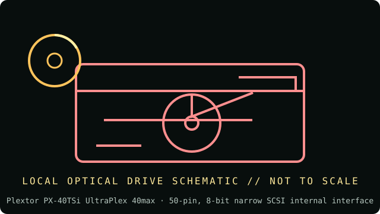

[ INDIVIDUAL COMPONENT // OPTICAL DRIVES ]
Plextor PX-40TSi UltraPlex 40max
Internal 40× SCSI CD-ROM reader. This is the narrow internal model; related SCSI-wide and external variants are not interchangeable. Specifications below are tied to the exact model identifiers and cited documentation; nearby product families may differ.

IDENTIFICATION: Plextor PX-40TSi UltraPlex 40max · confirm full model/revision marking and compare it with the cited source before assigning a host or media capability.
Verified specifications
| Catalog subcategory | CD-ROM readers |
|---|---|
| Exact product identifier | Plextor PX-40TSi UltraPlex 40max |
| Era / product type | Internal SCSI CD-ROM, UltraPlex 40max generation |
| Read/write and media | Up to 40× CD read; supports CD-ROM/CD-DA and reading CD-R/CD-RW; it is not a recorder. |
| Interface and mechanics | 50-pin, 8-bit narrow SCSI internal interface; 5.25-inch half-height tray drive. The related PX-40TSUWi wide model uses a different 68-pin interface; verify model suffix. |
| Variant and host cautions | Requires a compatible narrow-SCSI host adapter and correctly set SCSI ID/termination. Do not connect a 68-pin wide model or treat an external PX-40TSe as the same mechanism. Jumper settings and termination must suit the physical end of the SCSI chain. |
Optical-media preservation notes
Use a stable, terminated SCSI chain and note the adapter, ID, firmware, and any read errors in the preservation log. Do not test fragile discs at maximum speed by default; create and checksum a verified image.
- Handle discs by the edge or center hub; do not write on the data side or add adhesive labels over the recording surface.
- Store in a clean, cool, dry, dark environment in protective cases. Keep original media unmodified and make verified working images for access.
- Retain checksums, drive model/firmware, software, read errors, media type, and acquisition/handling history with each preservation image.
Identification and host checks
- Confirm the complete manufacturer label, model suffix, revision, serial/date code, and supplied bezel, cable, adapter, or bracket before installation.
- Requires a compatible narrow-SCSI host adapter and correctly set SCSI ID/termination. Do not connect a 68-pin wide model or treat an external PX-40TSe as the same mechanism. Jumper settings and termination must suit the physical end of the SCSI chain.
- Use a stable, terminated SCSI chain and note the adapter, ID, firmware, and any read errors in the preservation log. Do not test fragile discs at maximum speed by default; create and checksum a verified image.
Manufacturer, standards and preservation sources
- Plextor — UltraPlex 40max operation manual (PX-40TS family)Original model-family manual; select the PX-40TSi internal narrow-SCSI variant and read its interface/setting tables.
- Plextor PX-40TSi manual mirrorManual listing for PX-40TS/PX-40TSU wide and narrow variants; exact suffix determines SCSI connector.
- Ecma International — ECMA-130 CD-ROM standardCD-ROM format reference.
- NIST — Care and handling of CDs and DVDs: Guide for librarians and archivistsPreservation practice for optical discs; follow applicable media-specific guidance and keep redundant verified copies.
- Library of Congress — Sustainability of Digital FormatsFormat-sustainability reference for planning access, preservation, and migration of digital content.
Manufacturer ratings describe supported media and maximum speeds, not guaranteed read quality from a particular aged disc. Standards and preservation guidance do not certify this drive or a media batch.